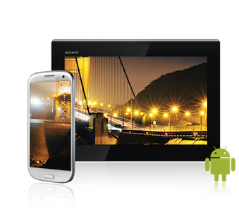
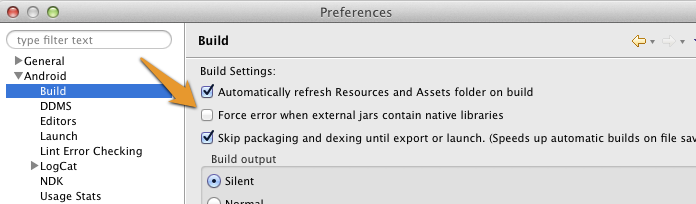

Setup Guide Android

Project Setup
- Create a new Android Application Project (There is also a working SampleProject bundled in this SDK, where all these steps are already made)
- Create a
libsfolders in your project root directory and copylibs/wikitudesdk.jar In Eclipse enter
Preferences->Android->Buildand ensure the optionForce error when external jars contain native librariesis unchecked
Add the following permissions to your Manifest.xml
<uses-permission android:name="android.permission.INTERNET" />
<uses-permission android:name="android.permission.ACCESS_COARSE_LOCATION" />
<uses-permission android:name="android.permission.ACCESS_FINE_LOCATION" />
<uses-permission android:name="android.permission.ACCESS_NETWORK_STATE" />
<uses-permission android:name="android.permission.ACCESS_WIFI_STATE" />
<uses-permission android:name="android.permission.ACCESS_GPS" />
<uses-permission android:name="android.permission.CAMERA" />
<uses-permission android:name="android.permission.INTERNET" />
<uses-permission android:name="android.permission.WRITE_EXTERNAL_STORAGE" />
<uses-feature android:name="android.hardware.camera" android:required="true" />
<uses-feature android:name="android.hardware.location" android:required="true" />
<uses-feature android:name="android.hardware.sensor.accelerometer" android:required="true" />
<uses-feature android:name="android.hardware.sensor.compass" android:required="true" />
<uses-feature android:glEsVersion="0x00020000" android:required="true" />
<uses-sdk android:targetSdkVersion="16" android:minSdkVersion="8"/>- The activity holding the AR-View (called
architectViewin the following) must have setandroid:configChanges="screenSize|orientation"in theAndroidManifest.xml, for example this could look like:
<activity android:name="com.yourcompany.yourapp.YourArActivity"
android:configChanges="screenSize|orientation"/>AR View in Activity
Keep in mind that the Wikitude SDK is not a native Android SDK as you know from other SDK's. The basic concept is to add a so called architectView in your project and notify it about lifecycle events. The architectView creates a Camera-Surface and handles sensor events.
The experience itself, named ARchitect World, is implemented in JavaScript and packaged in your application's asset-folder (as in this project) or on your own server.
ARchitectWorlds are written in HTML/JavaScript and call methods in Wikitude's AR-namespace (e.g. AR.GeoObject).
You must include
<script src="architect://architect.js"></script>in ARchitect World html files to use AR namespace and the architectView will handle them properly (To test an ARchitect World on a desktop browser, you must include ade.js tool instead to avoid JavaScript Errors and see a development console)
It is recommended to handle augmented reality in a separate Activity.
Declare the architectView inside a layout XML.
E.g. Add this within FrameLayout's parent-tags
<com.wikitude.architect.ArchitectView android:id="@+id/architectView"
android:layout_width="fill_parent" android:layout_height="fill_parent"/>ArchitectView is creating a camera surface so ensure to properly release camera in case you're using it somewhere else in your application.
Besides the rear-camera the ArchitectView also makes use of compass and accelerometer values, requires OpenGL 2.0 and at least Android 2.2.
ArchitectView.isDeviceSupported(Context context) checks wether the current device has all required hard- and software in place or not.
Note: Make AR-View only accessible to supported devices
It is very important to notify the ArchitectView about life-cycle events of the Activity.
Call architectView's onCreate(), onPostCreate(), onPause, onDestroy() inside your Activity's lifecycle methods.
Best practice is to define a member variable for the architectView in your Activity. Set it right after setContentViewin Activity's onCreate(), and then access architectView via member-variable later on.
this.architectView = (ArchitectView)this.findViewById( R.id.architectView );
final ArchitectConfig config = new ArchitectConfig( "" /* license key */ );
this.architectView.onCreate( config );Activity's onPostCreate() is the best place to load the AR-Experience.
this.architectView.onPostCreate();
this.architectView.load( "YOUR-AR-URL" );The architectView.load() argument is the path to the html file that defines your AR experience. It can be relative to the asset folder root or a web-url (starting with http:// or https://).
e.g. architectView.load('arexperience.html') opens the html in your project's assets-folder, whereat architectView.load('http://your-server.com/arexperience.html') loads the file from a server.
Note: You can only pass arguments to the html file when loading it via url. architectView.load('arexperience.html?myarg=1') does not work.
Location
Management of the location is important in geo-based augmented reality applications. Depending on the use-case location is used via GPS or network and may be updated every second or once in a while.
Although the SDKExamples- project provides a basic implementation of a LocationProvider this is by far not the best location strategy available for Android.
Please use your own advanced location strategy implementation in case you have special requirements.
Supported Devices
Wikitude SDK is working on devices fulfilling the following requirements:
- Android 2.2, SDK=8 (but running way faster on Android 4+ )
- Compass
- GPS and / or network positioning
- Accelerometer
- High resolution devices (hdpi) with at least dual core preferred (may lag on others)
- Rear-facing camera
- OpenGL 2.0
You can use static method ArchitectView.isDeviceSupported(), to check whether a devices is support. The method returns false if the device is not supported. It is up to the developer to not launch ARView on unsupported devices and tell the user why AR is not enabled.
Note: Wikitude SDK is not working on HTC Desire X (missing compass), Google Nexus 7 (missing rear-facing cam) and some low-resolution devices that do not support openGL 2.0